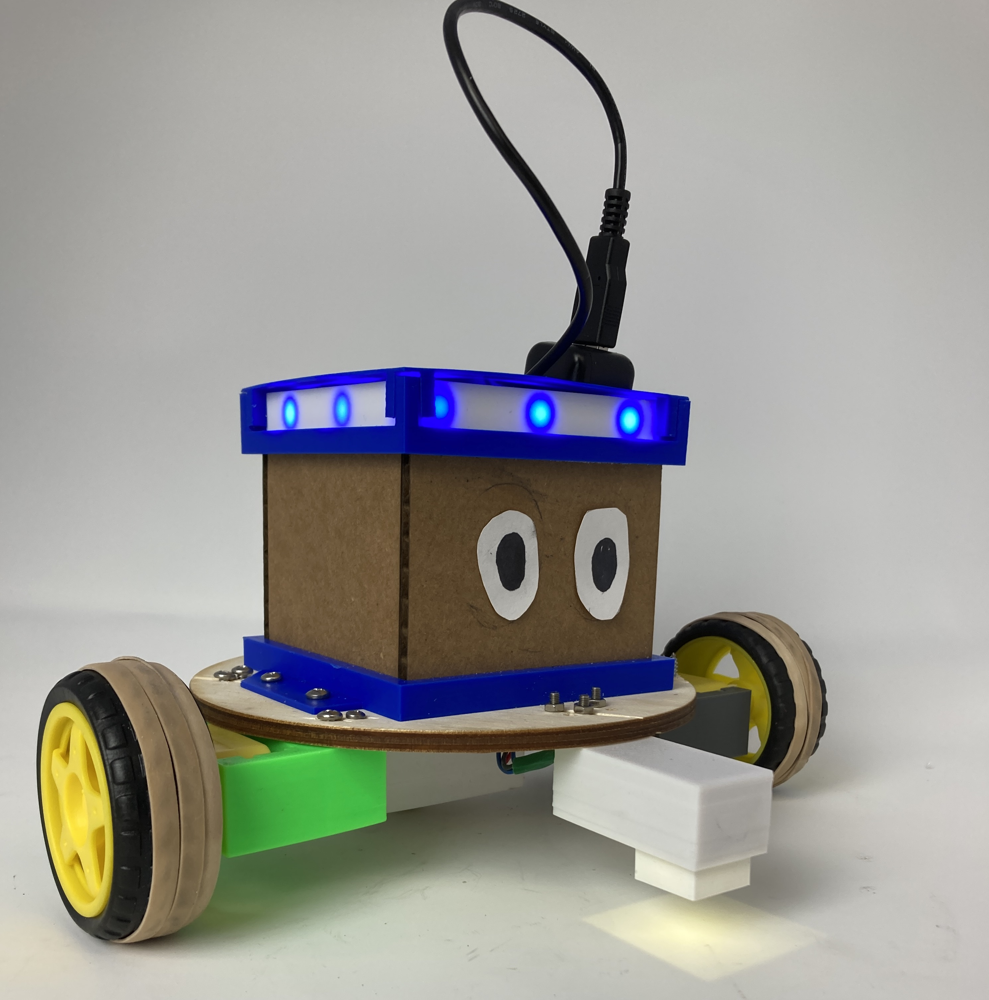
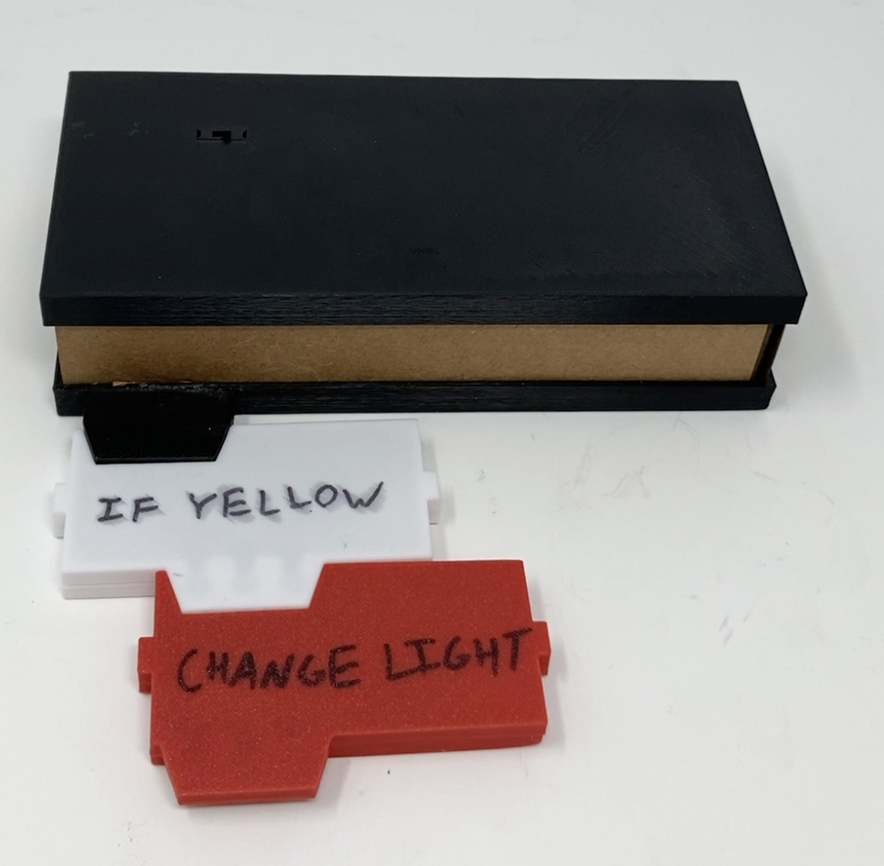
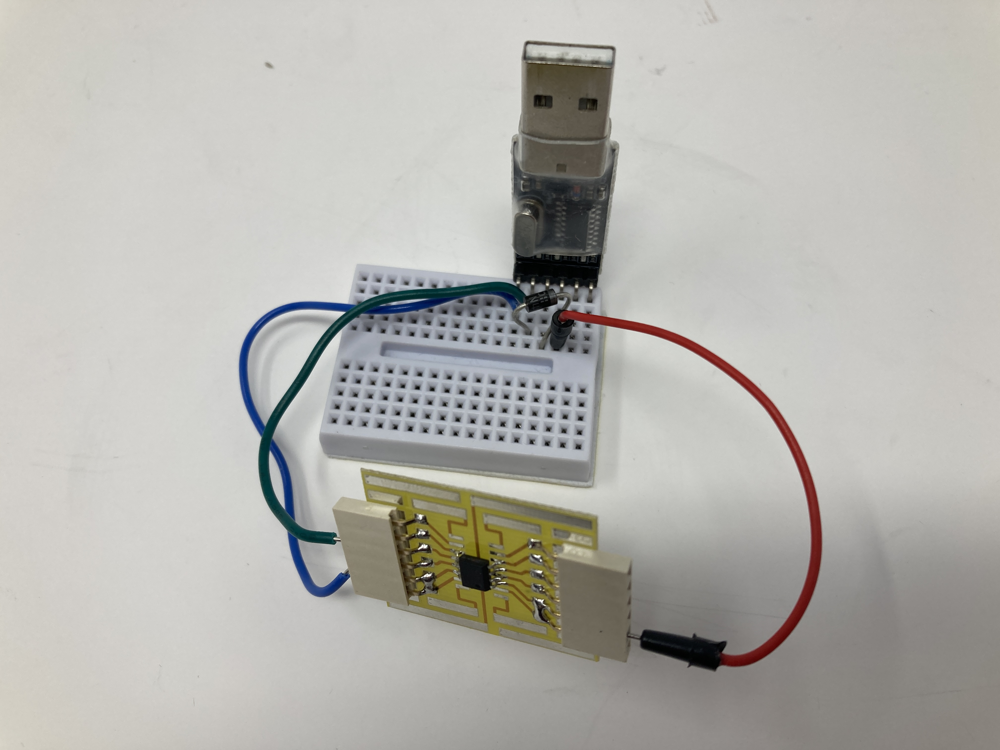
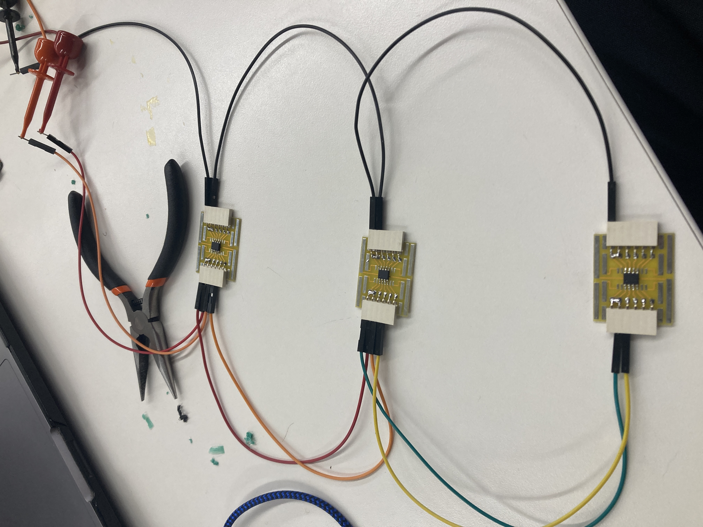
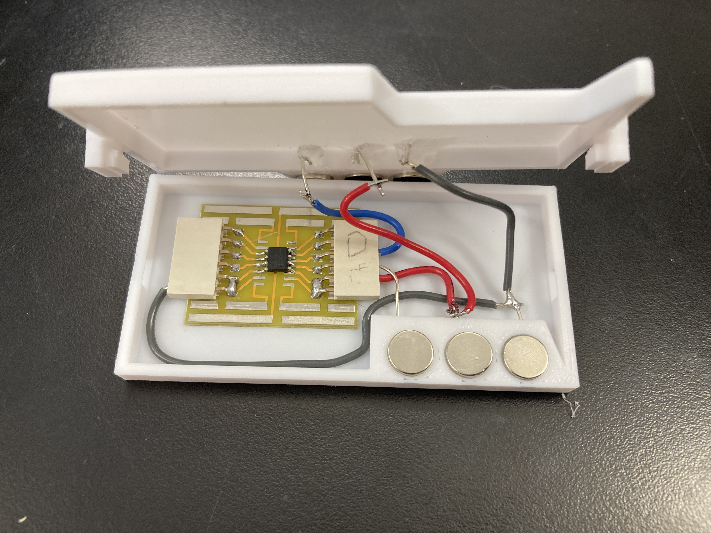
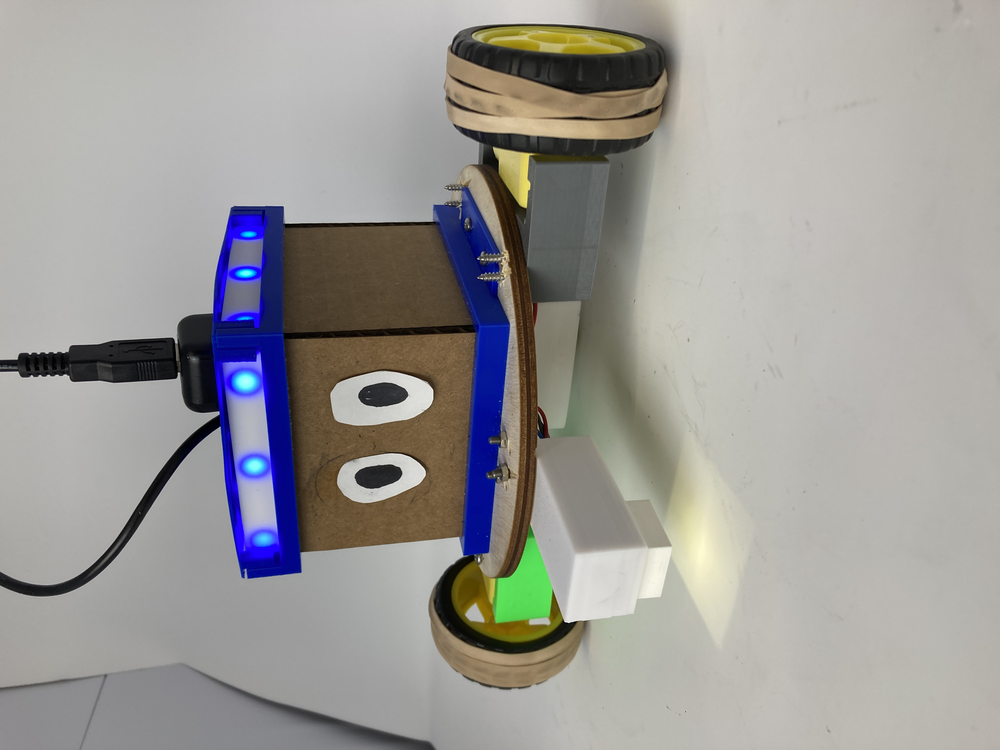
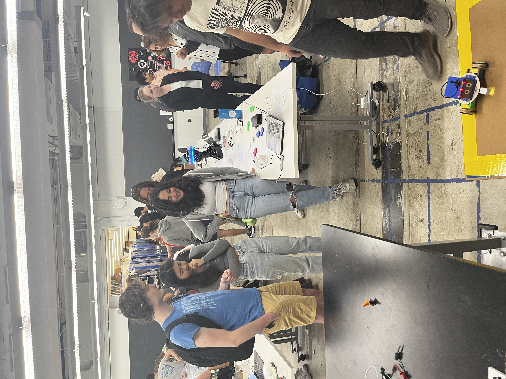
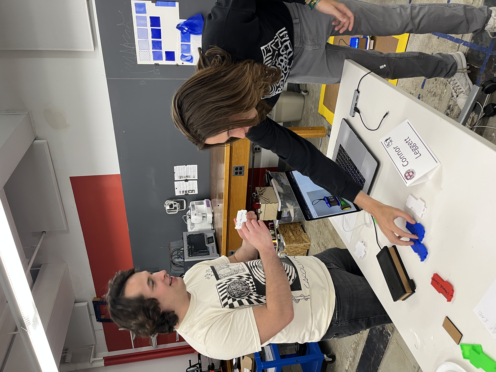
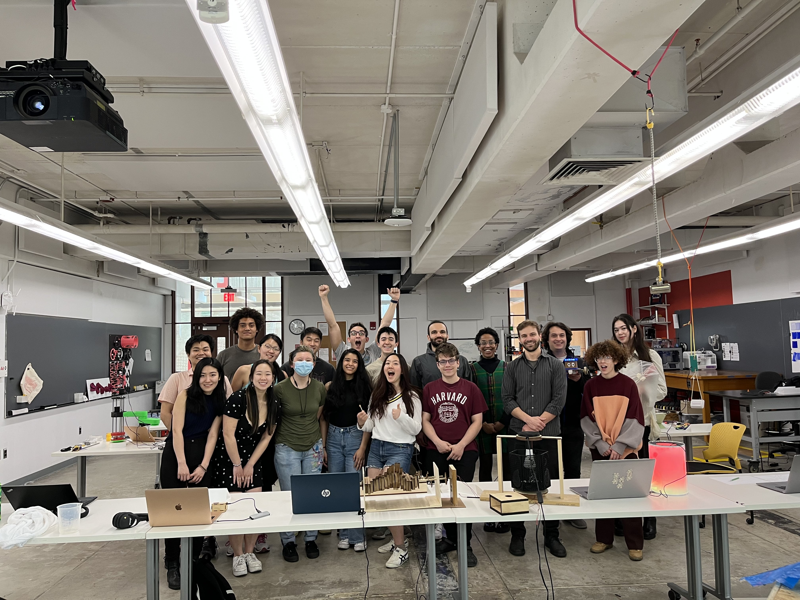

<!DOCTYPE html>
<html>

<head>
  <meta charset="utf-8" />
  <title>Connor x PS70</title>
  <link href="https://cdn.jsdelivr.net/npm/bootstrap@5.3.0-alpha1/dist/css/bootstrap.min.css" rel="stylesheet"
    integrity="sha384-GLhlTQ8iRABdZLl6O3oVMWSktQOp6b7In1Zl3/Jr59b6EGGoI1aFkw7cmDA6j6gD" crossorigin="anonymous">
  <link rel="icon" href="../images/favicon.ico">
  <link rel="stylesheet" href="https://maxcdn.bootstrapcdn.com/bootstrap/3.4.1/css/bootstrap.min.css">
  <script src="https://ajax.googleapis.com/ajax/libs/jquery/3.6.1/jquery.min.js"></script>
  <script src="https://maxcdn.bootstrapcdn.com/bootstrap/3.4.1/js/bootstrap.min.js"></script>
  <script src="https://cdn.jsdelivr.net/gh/google/code-prettify@master/loader/run_prettify.js"></script>

  <link rel="stylesheet" href="../styles.css">

</head>

<body>
  <a href="../index.html?first=False"><button>Back to Home</button></a>

  <h1 class="text-center">Meet Blocky:</h1>


  

  <h2 class="text-center">Blocky is the output device for Blocky Coding, a programming language for kids built in the
    physical world!</h2>

  

  <h3 clas="text-center">When kids play with Blocky Coding, they use individual code blocks that fit together like
    puzzle pieces and snap fit with magnets to build a new program, and then send that program over to Blocky to try
    out! </h3>

  <h3>They could try writing a program like this one, that tells Blocky to change its light pattern when it sees yellow:
  </h3>

  <p>
    <button class="btn btn-primary" type="button" data-toggle="collapse" data-target="#collapseExample"
      aria-expanded="false" aria-controls="collapseExample">
      View Light Change Example
    </button>
  </p>
  <div class="collapse" id="collapseExample">
    <div class="container">
      <div class="row">
        <div class="col-xs-6">
          
        </div>
        <div class="col-xs-6">
          <iframe class="center-block" width="393" height="350" src="https://www.youtube.com/embed/mr6AK3CLmkk" title="change light" frameborder="0" allow="accelerometer; autoplay; clipboard-write; encrypted-media; gyroscope; picture-in-picture; web-share" allowfullscreen></iframe>
        </div>
        
      </div>
    </div>
  </div>


  <h3>Or maybe a program like this one, that tells Blocky to move forward, and then turn and change its light pattern
    (and color in this version of the code) if it sees yellow: </h3>

  <p>
    <button class="btn btn-primary" type="button" data-toggle="collapse" data-target="#collapseExample1"
      aria-expanded="false" aria-controls="collapseExample1">
      View Light Change and Movement Example
    </button>
  </p>
  <div class="collapse" id="collapseExample1">
    <div class="container">
      <div class="row">
        <div class="col-xs-6">
          
        </div>
        <div class="col-xs-6">
          <iframe class="center-block" width="828" height="311" src="https://www.youtube.com/embed/dI0CsmqrRao" title="turn and color and mode" frameborder="0" allow="accelerometer; autoplay; clipboard-write; encrypted-media; gyroscope; picture-in-picture; web-share" allowfullscreen></iframe>
        </div>
      </div>
    </div>
  </div>

  <h3>He're a quick video to give a quick explanation of what you can do with Blocky Coding! </h3>

  <iframe class="center-block" width="828" height="466" src="https://www.youtube.com/embed/CHDSnCLrz1Q"
    title="Blocky Coding" frameborder="0"
    allow="accelerometer; autoplay; clipboard-write; encrypted-media; gyroscope; picture-in-picture; web-share"
    allowfullscreen></iframe>

  <h2>Process</h2>

  <h3>For those interested in what it took to put this project together, below I've included a bit about how Blocky
    Coding came to be! For a more organized collection of all the code, <a
      href="https://github.com/cjleggett/blocky-coding">check out this GitHub repo!</a> </h3>

  <div class="accordion" id="accordionExample">
    <div class="card">
      <div class="card-header" id="headingOne">
        <h5 class="mb-0">
          <button class="btn btn-link collapsed" type="button" data-toggle="collapse" data-target="#collapseOne"
            aria-expanded="false" aria-controls="collapseOne">
            Motivation
          </button>
        </h5>
      </div>

      <div id="collapseOne" class="collapse" aria-labelledby="headingOne" data-parent="#accordionExample">
        <div class="card-body">
          <p>During my time in college, I've been involved in computer science education in several different
            capacities. While I've mostly been involved in teaching older students, I was interested in how young kids
            can learn about the concepts and process of programming in a fun way. There are many tools out there already
            to teach kids about coding, but I wanted to build a product that would deal with what I saw as the three
            main issues with existing activities: </p>
          <ul>
            <li>Screen-Centered: Most programming takes place on computer screens, and this is true for learning-focused
              programs like <a href="https://scratch.mit.edu/">Scratch</a> and <a
                href="https://blockly.games/">Blockly</a>. Very young kids could be more engaged and parents may be more
              on board with an activity that takes place in the physical world.</li>
            <li>Limited Functionality: There are some existing physical programming products like the <a
                href="https://www.youtube.com/watch?v=CYYaNzfDk08">Code & Go Robot Mouse Set</a> or <a
                href="https://www.primotoys.com/">Cubetto</a>, but these products are limited in the number of
              isntructions that can be encoded. The mouse itsself must take in the commands a learner wants to use, and
              cubetto only has a certain number of pins that can be filled. Neither program includes if statements.
            </li>
            <li>Cost: Physical coding sets can be expensive: The Robot Mouse Activity Set was the lowest-cost option I
              could find at $50, while a Cubetto kit costs over $200.</li>
          </ul>

          <p>With these goals in mind, I hoped to create a new option for kids interested in coding that was engaging,
            affordable, and potentially expandable!</p>
        </div>
      </div>
    </div>
    <div class="card">
      <div class="card-header" id="headingTwo">
        <h5 class="mb-0">
          <button class="btn btn-link collapsed" type="button" data-toggle="collapse" data-target="#collapseTwo"
            aria-expanded="false" aria-controls="collapseTwo">
            Planning
          </button>
        </h5>
      </div>
      <div id="collapseTwo" class="collapse" aria-labelledby="headingTwo" data-parent="#accordionExample">
        <div class="card-body">
          The planning process took the better part of the semester, and I checked in semi-regularly with some updates
          and sketches. You can check out the page about the planning process <a
            href="https://cjleggett.github.io/ps70/weeks/1.html">here</a>!
        </div>
      </div>
    </div>
    <div class="card">
      <div class="card-header" id="headingThree">
        <h5 class="mb-0">
          <button class="btn btn-link collapsed" type="button" data-toggle="collapse" data-target="#collapseThree"
            aria-expanded="false" aria-controls="collapseThree">
            Creating Code Blocks: Programming
          </button>
        </h5>
      </div>
      <div id="collapseThree" class="collapse" aria-labelledby="headingThree" data-parent="#accordionExample">
        <div class="card-body">
          When I began working on sensing the order of the code blocks in the program, I realized why I hadn't seen any
          examples of products with individual blocks that can be put together like this. My orginal idea was to use
          something like RFID sensing, I2C communication, or a complex sequence of resistors to detect which blocks were
          where, but unfortunately none of these methods would allow us to tell the order the blocks were in, only which
          blocks were present. My plan ended up being to use serial communication, where each block would contain its
          own microcontroller, and they would send messages upward toward one main code block. To save on space, each
          code block would be represented by a single character:

          <table class="table">
            <thead>
              <tr>
                <th scope="col">Character</th>
                <th scope="col">Code</th>
              </tr>
            </thead>
            <tbody>
              <tr>
                <td>D</td>
                <td>If any color</td>
              </tr>
              <tr>
                <td>E</td>
                <td>If Blue</td>
              </tr>
              <tr>
                <td>F</td>
                <td>If Yellow</td>
              </tr>
              <tr>
                <td>G</td>
                <td>If Green</td>
              </tr>
              <tr>
                <td>H</td>
                <td>End If</td>
              </tr>
              <tr class="table-primary">
                <td>A</td>
                <td>Forward</td>
              </tr>
              <tr class="table-primary">
                <td>B</td>
                <td>Turn</td>
              </tr>
              <tr class="table-primary">
                <td>C</td>
                <td>Stop</td>
              </tr>
              <tr class="table-success">
                <td>I</td>
                <td>Beep</td>
              </tr>
              <tr class="table-danger">
                <td>J</td>
                <td>Change Light Color</td>
              </tr>
              <tr class="table-danger">
                <td>K</td>
                <td>Change Light Pattern</td>
              </tr>
            </tbody>
          </table>

          <p>I ran into a ton of problems with the code to connect these, as the block microcontrollers I used (ATTiny
            412s) didn't have much memory and were difficult to debug since they involved using a programmer to upload
            code to. In the picture below, you'll see how I had to solder each ATTiny44 to a small board, solder
            connections to the board, and plug wires into that connection in order to upload the code I wrote:</p>

          

          <p>Testing out these blocks also took quite a bit of tedious wiring. Here's a picture of how messy it ended up
            looking:</p>

          

          <p>After a lot of debugging, I settled on this code for each of the Tinys. It involves each block sending its
            own name and the name of any former blocks to the one above it.</p>


          <pre class="prettyprint lang-cpp pre-scrollable">
// Update this to be the letter of the current command
char myName = 'K';

// Indicates whether a lower block has been found
bool found = false;

// Set up string variables
const int LEN = 30;
char str[LEN];
char TERM1 = '\0';
char TERM2 = '!';
bool newInfo = true;
int seq_len = 0;

void setup() {
  Serial.begin(9600);

  // Set up initial messageing
  str[0] = myName;
  for (int i = 1; i < LEN - 1; i++) {
    str[i] = TERM2;
  }
  str[LEN - 1] = TERM1;
}

void loop() {
  if (Serial.available())
  {
    // Read incoming
    Serial.readBytes(str, LEN);

    // Add my name to str
    found = false;
    for (int i = 0; i < LEN - 1; i++) {
      if (str[i] == TERM2 && !found) {
        str[i] = myName;
        found = true;
        if (i > seq_len) {
          seq_len = i;
          newInfo = true;
        } else {
          newInfo = false;
        }
      } else if (found) {
        str[i] = TERM2;
      }
    }

    // Add terminal character
    str[LEN - 1] = TERM1;
  }
  delay(1000);
  if (newInfo) {
    // Send new message and flush output
    Serial.write(str, LEN);
    Serial.flush();
  }  
}
            </pre>

          <p>Next I wrote code for the base code block, which housed a Xiao ESP32-C3. This one was a bit more
            manageable, and I ended up checking to make sure a stable message was being received and adding a Buzzer to
            indicate when a message was being received or transmitted.</p>

          <div class="container">
            <div class="row">
              <div class="col-xs-6">
                Main Code:
                <pre class="prettyprint lang-cpp pre-scrollable">
#include <HardwareSerial.h>
#include "WiFi.h"
#include <esp_now.h>
#include "Buzzer.h"
#include "notes.h"
#define buzzerPin 9
const int LEN = 30;

Buzzer buzz = Buzzer(buzzerPin);

// Indicates whether current string is being sent to robot
bool uploading = false;

// To keep track of former messages to decide if message is stable
int prev_len = 0;
int reps = 0;

// For sending via ESP-now
char toSend[LEN];
String success;

// Define Serial device mapped to the two internal UARTs
HardwareSerial MySerial0(0);

// Current and best overall messages
String incomingString;
String bestString;

// Robot's MAC address
uint8_t broadcastAddress[] =  {0xC8, 0xF0, 0x9E, 0x47, 0xF1, 0x7C};


// Callback when data is sent
void OnDataSent(const uint8_t *mac_addr, esp_now_send_status_t status) {
  if (status ==0){
    success = "Delivery Success :)";
  }
  else{
    success = "Delivery Fail :(";
  }
}

// Callback when data is received
void OnDataRecv(const uint8_t * mac, const uint8_t *incomingData, int len) {
  return;
}


void setup() {
  // Serial setup
  Serial.begin(9600);
  while (!Serial);
  MySerial0.begin(9600, SERIAL_8N1, -1, -1);
  Serial.println("MySerial0 Set Up");

  // Prepare buzzer
  pinMode(buzzerPin, OUTPUT);

  // Set up WiFi
  WiFi.mode(WIFI_MODE_STA);
  Serial.println(WiFi.macAddress());

  // Communications
  // Set device as a Wi-Fi Station
  WiFi.mode(WIFI_STA);

  // Init ESP-NOW
  if (esp_now_init() != ESP_OK) {
    Serial.println("Error initializing ESP-NOW");
    return;
  }

  // Register for a callback function that will be called when data is received
  esp_now_register_send_cb(OnDataSent);

  // Register peer
  esp_now_peer_info_t peerInfo;
  memset(&peerInfo, 0, sizeof(peerInfo));
  memcpy(peerInfo.peer_addr, broadcastAddress, 6);
  peerInfo.channel = 0;
  peerInfo.encrypt = false;

  // Add peer        
  if (esp_now_add_peer(&peerInfo) != ESP_OK){
    Serial.println("Failed to add peer");
    return;
  }

  // Register for a callback function that will be called when data is received
  esp_now_register_recv_cb(OnDataRecv);
}

// Calculate length of message
int getSequenceLength(String s) {
  for (int i = 0; i < s.length(); i++) {
    if (s.charAt(i) == '!') {
      return i;
    }
  }
  return -1;
}

// Ensure only capital letters and end chars are detected
bool checkValid(String s) {
  for (int i = 0; i < s.length(); i++) {
    char cur = s.charAt(i);
    if (cur != '!' && cur != '\0' && (cur < 65 || cur > 90)) {
      return false;
    }
  }
  return true;
}


void loop() {
  if (!uploading && MySerial0.available())
  {
    // Indicate serial data received
    buzz.playNote(C4, 10);

    incomingString = MySerial0.readStringUntil('\0');
    Serial.print("received: ");
    Serial.println(incomingString);
    bool valid = checkValid(incomingString);
    if (!valid) {
      // If current string not valid and last one was, use the last one
      if (prev_len > 0) {
        uploading = true;
      }
    } else 
    {
      int curLen = getSequenceLength(incomingString);
      if (curLen < prev_len || (curLen == prev_len && reps > 5)) {
        // Message is shorter or repeated enough, so upload!
        uploading = true;
      } else {
        // New, longer message is received, so keep reading...
        reps = 0;
        bestString = incomingString;
        prev_len = curLen;
      }
    }
  } else if (uploading) {
    // Convert to char array for sending
    for (int i = 0; i < LEN; i++) {
      toSend[i] = bestString.charAt(i);
    }
    buzz.playUploaded();
    esp_err_t result = esp_now_send(broadcastAddress, (uint8_t *) &toSend, sizeof(toSend));

    // Send message and reset
    if (result == ESP_OK) {
      Serial.print(toSend);
      Serial.println(" sent with success!");
      uploading = false;
      prev_len = 0;
      reps = 0;
    } else {
      Serial.println("Error sending the data");
    }
  }
  delay(200);
  buzz.off();
  delay(800);
}
                    </pre>
              </div>
              <div class="col-xs-6">
                <p>Buzzer.cpp (Buzzer.h and notes.h not included, but available on <a
                    href="https://github.com/cjleggett/blocky-coding/tree/main/base_code_block">GitHub</a>):</p>
                <pre class="prettyprint lang-cpp pre-scrollable">
#include "Buzzer.h"
#include <Arduino.h>
#include "notes.h"

float notes[5] = {C4, E4, G4, E4, C4};

Buzzer :: Buzzer(int buzzerPinIn)
{
  buzzerPin = buzzerPinIn;
  pinMode(buzzerPin, OUTPUT);
}

// Plays note at specified frrequency for specified length
void Buzzer :: playNote(float newFrequency, long newDuration)
{
  tone(buzzerPin, newFrequency);
}

// Hard resets the buzzer to off
void Buzzer :: off() {
  noTone(buzzerPin);
  duration = 0;
}

// Plays thirds CEGEC to indicate upload
void Buzzer :: playUploaded() {
  for (int i = 0; i < 5; i++) {
    tone(buzzerPin, notes[i]);
    delay(300);
    noTone(buzzerPin);
    delay(50);
  }
}

void Buzzer :: update()
{
  if (millis() - lastTime > duration) {
    noTone(buzzerPin);
  }
}
                    </pre>
              </div>
            </div>
          </div>

          <p>The maximum length of 30 could certainly be expanded a bit at the moment, but I may need to try a slightly
            larger microcontroller if I want the code to get too much longer.</p>

        </div>
      </div>
    </div>
    <div class="card">
      <div class="card-header" id="headingFour">
        <h5 class="mb-0">
          <button class="btn btn-link collapsed" type="button" data-toggle="collapse" data-target="#collapseFour"
            aria-expanded="false" aria-controls="collapseFour">
            Creating Code Blocks: Fabrication
          </button>
        </h5>
      </div>
      <div id="collapseFour" class="collapse" aria-labelledby="headingFour" data-parent="#accordionExample">
        <div class="card-body">
          <p>I used mainly 3d printing to build the final form of the blocks, and decided to conduct the signal through
            three magnets (power, ground, and Serial) in order to allow the blocks to click together cleanly. I went
            through a few drafts where there wasn't enough space for the wiring and the magnets were not precise enough,
            which was a big problem because if two of the magnets are not making direct contact, the signal cannot be
            sent. </p>

          <p>Here are the models of the pieces I printed, with unique pairs for a standard code block, the start of an
            if statement, and the end of an if statement.</p>

            <p><a href="https://college517.autodesk360.com/shares/public/SH512d4QTec90decfa6ea173b400c4665632?mode=embed">Link if below model does not work</a></p>

          <iframe src="https://college517.autodesk360.com/shares/public/SH512d4QTec90decfa6ea173b400c4665632?mode=embed"
            width="640" height="480" allowfullscreen="true" webkitallowfullscreen="true" mozallowfullscreen="true"
            frameborder="0"></iframe>

          <p>After printing each block, I had to solder wire to magnets, then attach them to microcontrollers and each
            other. This was an extremely tedious process that took me at least half an hour per block, as I had no
            experience soldering in a situation with serious space constraints. (I couldn't have too much wire or the
            block would not close.) In the future, I think continued development on this project would include using a
            PCB to consolidate the mess of wires you can see inside this sample if block:</p>

          

          Overall, I was pretty happy with how these turned out! The connection could be tenuous at times, but it did
          work!

        </div>
      </div>
    </div>
    <div class="card">
      <div class="card-header" id="headingFive">
        <h5 class="mb-0">
          <button class="btn btn-link collapsed" type="button" data-toggle="collapse" data-target="#collapseFive"
            aria-expanded="false" aria-controls="collapseFive">
            Building Blocky: Programming
          </button>
        </h5>
      </div>
      <div id="collapseFive" class="collapse" aria-labelledby="headingFive" data-parent="#accordionExample">
        <div class="card-body">
          <p>Blocky, the output device, was controlled by an ESP32, and functionality was fairly modular, so I was able
            to split the code up into several classes. Most important among them was the Driving class, which controlled
            the wheels. I ran into problems with Blocky moving too quickly to stay on track, so the main coding part
            here was only moving the wheels forward 3/10 of the time. In the below code, I don't include the .h files as
            they're not quite as interesting, but they're all available on <a
              href="https://github.com/cjleggett/blocky-coding/tree/main/final_car">GitHub!</a> </p>

          <pre class="prettyprint lang-cpp pre-scrollable">
#include "Drive.h"
#include <Arduino.h>

Drive :: Drive() {
  motor1A = 18;
  motor1B = 23;
  motor2A = 10;
  motor2B = 5;

  freq = 5000;
  channel1 = 1;
  channel2 = 2;
  resolution = 8;
  speed = 255;

  pinMode(channel1, OUTPUT);
  pinMode(motor1B, OUTPUT);
  pinMode(channel2, OUTPUT);
  pinMode(motor2B, OUTPUT);

  interval = 100;
}

void Drive :: setup() {
  ledcSetup(channel1, freq, resolution);
  ledcAttachPin(motor1A, channel1);

  ledcSetup(channel2, freq, resolution);
  ledcAttachPin(motor2A, channel2);
  stop();
}

void Drive :: forward() {
  if (state == 0) {
    state = 1;
  }
}

void Drive :: backward() {
  state = 0;
  ledcWrite(channel1, 255 - speed);
  digitalWrite(motor1B, HIGH);
  ledcWrite(channel2, speed);
  digitalWrite(motor2B, LOW);
}

// Turning in only one direction
// This should be a wiring problem though rather than code
void Drive :: turn(int right) {
  state = 0;
  if (right) {
    Serial.println("RIGHT");
    ledcWrite(channel1, 255 - speed);
    digitalWrite(motor1B, HIGH);
    ledcWrite(channel2, 255 - speed);
    digitalWrite(motor2B, HIGH);
  } else {
    Serial.println("LEFT");
    ledcWrite(channel1, speed);
    digitalWrite(motor1B, LOW);
    ledcWrite(channel2, speed);
    digitalWrite(motor2B, LOW);
  }
}

void Drive :: stop() {
  state = 0;
  ledcWrite(channel1, 255 - speed);
  digitalWrite(motor1B, LOW);
  ledcWrite(channel2, 0);
  digitalWrite(motor2B, 0);
}

void Drive :: turnRandom() {
  state = 0;
  randomSeed(millis());
  duration = random(300, 900);
  direction = 1;
  turn(direction);
  delay(duration);
  stop();
  delay(500);
}

void Drive :: update() {
  // Driving forward only 3/10 of the time to slow down
  if (state == 0) {
    return;
  }
  if (millis() - prevTime > interval) {
    state = 1 + (state % 10);
    prevTime = millis();
  }
  if (state == 1 || state == 4 || state == 7 ) {
    ledcWrite(channel1, speed);
    digitalWrite(motor1B, LOW);
    ledcWrite(channel2, 255 - speed);
    digitalWrite(motor2B, HIGH);
  }
  else {
    ledcWrite(channel1, 255 - speed);
    digitalWrite(motor1B, LOW);
    ledcWrite(channel2, 0);
    digitalWrite(motor2B, 0);
  }
}
            </pre>

          <p>I also had a Strip Light that allowed the top to change colors and patterns. Here's the code I used for
            that:</p>

          <pre class="prettyprint lang-cpp pre-scrollable">
#include "strip.h"
#include <Arduino.h>
#include "constants.h"
#include <FastLED.h>

Strip :: Strip(CRGB *leds_in)
{
  leds = leds_in;
  on = false;
  mode = 1;
  last_time = millis();
  buffer = 1000;

}

// Sets all LEDs to a certain color
void Strip :: update_all(int c)
{
  for (int i = 0; i < NUM_LEDS; i++)
  {
    leds[i] = colors[c];
  }
}

// Switches state of all lights on or off
void Strip :: blink_update(long duration)
{
  // switch from on to off
  if (millis() - last_time > duration)
  {
    on = !on;
    last_time = millis();
  }

  if (on)
  {
    update_all(color);
  }
  else
  {
    update_all(3);
  }
}

// Turns one light on at a time in a circle
void Strip :: circle_update(long duration)
{
  long time = millis() - last_time;
  // reset time if surpassed to avoid overflow
  if (time > duration){
    last_time = millis();
    time = 0;
  }
  for (int i = 0; i < NUM_LEDS; i ++)
  {
    if (time * NUM_LEDS / duration == i) 
    {
      leds[i] = colors[color];
    }
    else
    {
      leds[i] = colors[3];
    }
  }
  
}

// Based on state, update all LEDs
void Strip :: update()
{
  if (mode == 1) {
    update_all(color);
  }
  if (mode == 0) {
    update_all(3);
  }
  if (mode == 2){
    blink_update(500);
  }
  if (mode == 3){
    blink_update(250);
  }
  if (mode == 4) {
    circle_update(1000);
  }
  FastLED.show();
}

// 0 = off, 1 = constant, 2 = blink, 3 = blink fast, 4 = circle
void Strip :: change_mode()
{
  mode = (mode + 1) % 5;
}

// 0 = red, 1 = blue, 2 = green
void Strip :: change_color()
{
  color = (color + 1) % 3;
}

void Strip :: off()
{
  mode = 0;
  color = 0;
}
            </pre>

          <p>And here's code for a buzzer that can beep, but ended up being too quiet to hear well:</p>

          <pre class="prettyprint lang-cpp pre-scrollable">
#include "Buzzer.h"
#include <Arduino.h>

const int durations[4] = {300, 50, 600, 500};


Buzzer :: Buzzer(int p, int n) {
  pin = p;
  note = n;
  state = 0;
  lastTime = millis();
}

void Buzzer :: setup() {
  ledcSetup(channel, note, resolution);
  ledcAttachPin(pin, channel);
}

// Using delay due to problems with drifting off the board while driving
void Buzzer :: beep() {
  ledcWriteTone(channel, note);
  delay(durations[0]);
  ledcWriteTone(channel, 0);
  delay(durations[1]);
  ledcWriteTone(channel, note);
  delay(durations[2]);
  ledcWriteTone(channel, 0);
}

// Turn off
void Buzzer :: off() {
  ledcWriteTone(channel, 0);
}

// Currently not used, but should eventually replace the beep functionality
void Buzzer :: update() {
  newTime = millis();
  if (state == 0) {
    off();
  }
  else if (state == 1 && newTime - lastTime > durations[0]) {
    state = 2;
    off();
    lastTime = millis();
  }
  else if (state == 2 && newTime - lastTime > durations[1]) {
    state = 3;
    ledcWriteTone(channel, note);
    lastTime = millis();
  }
  else if (state == 3 && newTime - lastTime > durations[2]) {
    state = 4;
    off();
    lastTime = millis();
  } else if (state == 4 && newTime - lastTime > durations[3]) {
    state = 0;
  }
}
            </pre>

          <p>Blocky also needed some way to sense what color it was looking at, so here's the code to go with the color
            detector I used, the TCS34725:</p>

          <pre class="prettyprint lang-cpp pre-scrollable">
#include "ColorSensor.h"
#include <Arduino.h>

// Lower and upper bounds for acrylic green, yellow, and blue;
const int lowers[3][4] = {
  {580, 840, 440, 2150},
  {0, 0, 0, 2500},
  {550, 850, 500, 2100}
};

const int uppers[3][4] = {
  {650, 950, 490, 2200},
  {10000, 10000, 10000, 10000},
  {650, 950, 600, 2400}
};
const String colors[3] = {"Green", "Yellow", "Blue"};


ColorSensor :: ColorSensor() {
  tcs = Adafruit_TCS34725(TCS34725_INTEGRATIONTIME_600MS, TCS34725_GAIN_1X);
}

void ColorSensor :: setup() {
  while (!tcs.begin()) {
    Serial.println("No TCS34725 found ...");
  }
  Serial.println("Found sensor!");
}

// Returns "Yellow", "Blue", "Green", or "Other"
String ColorSensor :: getColorName() {
  senseColors();
  for (int k = 0; k < 3; k++) {
    bool color = true;
    for (int i = 0; i < 4; i++) {
      if (rgbc[i] > uppers[k][i] || rgbc[i] < lowers[k][i]) {
        color = false;
      }
    }
    if (color) {
      return colors[k];
    }
  }
  return "Other";
}

// Senses colors quickly
void ColorSensor :: senseColors() {
  rgbc[3] = tcs.read16(TCS34725_CDATAL);
  rgbc[0] = tcs.read16(TCS34725_RDATAL);
  rgbc[1] = tcs.read16(TCS34725_GDATAL);
  rgbc[2] = tcs.read16(TCS34725_BDATAL);
}

// Adds colors to buffer
void ColorSensor :: getColors(int *buffer) {
  senseColors();
  for (int i = 0; i < 4; i++) {
    buffer[i] = rgbc[i];
  }
}
            </pre>

          <p>Finally, all this was put together, as well as the reception of data from the code blocks, in a main file:
          </p>

          <pre class="prettyprint lang-cpp pre-scrollable">
#include "WiFi.h"
#include <esp_now.h>
#include "ColorSensor.h"
#include "Buzzer.h"
#include <FastLED.h>
#include "strip.h"
#include "constants.h"
#include "Drive.h"
#define beep_note 1000
#define buzzer_pin 26

// Max message Length
const int LEN = 30;

// How long to run for at maximum
const int timeout_minutes = 10;

// Initialize helper objects
Drive driver = Drive();
ColorSensor sensor = ColorSensor();
Buzzer buzz = Buzzer(buzzer_pin, beep_note);
int rgbc[4];
CRGB leds[NUM_LEDS];
Strip stp = Strip(leds);

// Is the above if statement satisfied?
bool ifSatisfied;

char commands[LEN] = "";
int num_commands = 0;

/*
Start of code having to do with ESP-Now
---
---
---
*/
String success;
char dataReceived[LEN];
// char incomingString[LEN];
uint8_t broadcastAddress[] = { 0x34, 0x85, 0x18, 0x03, 0x19, 0x80 };

// Callback when data is sent
void OnDataSent(const uint8_t *mac_addr, esp_now_send_status_t status) {
  if (status == 0) {
    success = "Delivery Success :)";
  } else {
    success = "Delivery Fail :(";
  }
}

// Callback when data is received
void OnDataRecv(const uint8_t *mac, const uint8_t *incomingData, int len) {
  memcpy(&dataReceived, incomingData, sizeof(dataReceived));
}

void setupESPNow() {
  // Set device as a Wi-Fi Station
  WiFi.mode(WIFI_STA);

  // Init ESP-NOW
  if (esp_now_init() != ESP_OK) {
    Serial.println("Error initializing ESP-NOW");
    return;
  }

  // Register for a callback function that will be called when data is received
  esp_now_register_send_cb(OnDataSent);

  // Register peer
  esp_now_peer_info_t peerInfo;
  memset(&peerInfo, 0, sizeof(peerInfo));
  memcpy(peerInfo.peer_addr, broadcastAddress, 6);
  peerInfo.channel = 0;
  peerInfo.encrypt = false;

  // Add peer
  if (esp_now_add_peer(&peerInfo) != ESP_OK) {
    Serial.println("Failed to add peer");
    return;
  }
  // Register for a callback function that will be called when data is received
  esp_now_register_recv_cb(OnDataRecv);
}

/*
End of code having to do with ESP-Now
---
---
---
*/

void setup() {
  Serial.begin(115200);
  WiFi.mode(WIFI_MODE_STA);
  Serial.println(WiFi.macAddress());

  sensor.setup();
  setupESPNow();
  buzz.setup();
  FastLED.addLeds<NEOPIXEL, LED_PIN>(leds, NUM_LEDS);
  driver.setup();
  driver.stop();
  randomSeed(analogRead(2));

  // Beep and turn on light
  stp.change_color();
  buzz.beep();
}

// Check if seeing the color passed in as argument. Either "Yellow", "Blue", "Green", or "Any"
bool checkSatisfied(String currentColor) {
  String colorSensed = sensor.getColorName();
  return (currentColor == colorSensed) || (currentColor == "Any" && colorSensed != "Other");
}

// Handles mapping of single characters to actions.
// See documentation for explanation of this mapping
void handleCommand(char cmd) {
  Serial.println(cmd);
  if (cmd == 'D') {
    ifSatisfied = checkSatisfied("Any");
  } else if (cmd == 'H') {
    ifSatisfied = true;
  } else if (!ifSatisfied) {
    return;
  } else if (cmd == 'I') {
    buzz.beep();
  } else if (cmd == 'J') {
    stp.change_color();
  } else if (cmd == 'K') {
    stp.change_mode();
  } else if (cmd == 'A') {
    driver.forward();
  } else if (cmd == 'B') {
    driver.turnRandom();
  } else if (cmd == 'C') {
    driver.stop();
    delay(500);
  }
}

// Checks if data recieved is in valid form
bool checkValid() {
  for (int i = 0; i < LEN; i++) {
    char cur = dataReceived[i];
    if (cur != '!' && cur != '\0' && (cur < 65 || cur > 90)) {
      return false;
    }
  }
  return true;
}

// Creates new set of commands and updates length of commands
// Characters are sent in reverse order
int makeNewCommands() {
  // Locate first '!'
  int first = -1;
  for (int i = 0; i < LEN; i++) {
    if (first < 0 && dataReceived[i] == '!') {
      first = i;
    }
  }

  // Reverse Commands:
  for (int i = 0; i < first; i++) {
    commands[i] = dataReceived[first - i - 1];
    Serial.print(dataReceived[first - i - 1]);
  }
  return first;
}


void loop() {
  // Update command string
  if (checkValid()) {
    num_commands = makeNewCommands();
    if (num_commands > 0) {
      Serial.println(commands);
      Serial.println(num_commands);
    }
  }
  
  // Update helper objects
  sensor.getColors(rgbc);
  // buzz.update();
  stp.update();
  driver.update();

  // Process Code String if timeout not occurred
  ifSatisfied = true;
  if (millis() < timeout_minutes * 60 * 1000) {
    for (int i = 0; i < num_commands; i++) {
      char cmd = commands[i];
      handleCommand(cmd);
    }
  } else {
    driver.stop();
  }
}
            </pre>

          <p>I think there's a lot about this code that can be improved, like more precise turning, calibration for the
            color sensor, and fewer delay uses, but it got the job done!</p>

        </div>
      </div>
    </div>
    <div class="card">
      <div class="card-header" id="headingSix">
        <h5 class="mb-0">
          <button class="btn btn-link collapsed" type="button" data-toggle="collapse" data-target="#collapseSix"
            aria-expanded="false" aria-controls="collapseSix">
            Building Blocky: Fabrication
          </button>
        </h5>
      </div>
      <div id="collapseSix" class="collapse" aria-labelledby="headingSix" data-parent="#accordionExample">
        <div class="card-body">
          <p>Finally for the output, I had to put all the parts of Blocky together, which was no small task. I 3D
            printed cases for the motors and color sensor, as well as bottom and top supports for the top box. Then I
            used a wooden circle as a base and cardboard as walls, all held together by a mix of screws, nuts, bolts,
            and press-fit. I thought a nice touch too was the acrylic on top that hid the LED strips!</p>

          <p>3D design to hold the motors: <a
              href="https://college517.autodesk360.com/shares/public/SH512d4QTec90decfa6e7ded37a267a88d9c?mode=embed">(Link
              in Case Model Not Working)</a> </p>

          <iframe src="https://college517.autodesk360.com/shares/public/SH512d4QTec90decfa6e7ded37a267a88d9c?mode=embed"
            width="640" height="480" allowfullscreen="true" webkitallowfullscreen="true" mozallowfullscreen="true"
            frameborder="0"></iframe>

          <p>3D design to hold the color sensor: <a
              href=https://college517.autodesk360.com/shares/public/SH512d4QTec90decfa6e496ed826aef347c2?mode=embed">(Link
              in Case Model Not Working)</a></p>

          <iframe src="https://college517.autodesk360.com/shares/public/SH512d4QTec90decfa6e496ed826aef347c2?mode=embed"
            width="640" height="480" allowfullscreen="true" webkitallowfullscreen="true" mozallowfullscreen="true"
            frameborder="0"></iframe>

          <p>And the 3D design to hold the box and acrylic! <a
              href="https://college517.autodesk360.com/shares/public/SH512d4QTec90decfa6eacb4f903fc943dc1?mode=embed"">(Link in Case Model Not Working)</a></p>

            <iframe src="
              https://college517.autodesk360.com/shares/public/SH512d4QTec90decfa6eacb4f903fc943dc1?mode=embed"
              width="640" height="480" allowfullscreen="true" webkitallowfullscreen="true" mozallowfullscreen="true"
              frameborder="0"></iframe>

              <p>I think Blocky ended up looking pretty cute!</p>

              
        </div>
      </div>
    </div>
    <div class="card">
      <div class="card-header" id="headingSeven">
        <h5 class="mb-0">
          <button class="btn btn-link collapsed" type="button" data-toggle="collapse" data-target="#collapseSeven"
            aria-expanded="false" aria-controls="collapseSeven">
            Reflection and Future Ideas
          </button>
        </h5>
      </div>
      <div id="collapseSeven" class="collapse" aria-labelledby="headingSeven" data-parent="#accordionExample">
        <div class="card-body">
          <h2>Reflection</h2>

          <p>Overall, I'm really proud of the demo I put together, especially given how long it took me to do something
            like make an LED blink at the beginning of the semester. It's been a while since I've had a project that has
            put me through as many 10+ hour days and sleepless nights not because I was worried about a grade, but
            because I was really excited about working on it. I had a lot of fun showing Blocky off at the fair, and it
            was even more fun seeing all of my classmates with their super cool projects!</p>

          <h3>Photos from the fair:</h3>

          <div class="container">
            <br>
            <div id="myCarousel" class="carousel slide" data-interval="false">
              <!-- Indicators -->
              <ol class="carousel-indicators">
                <li data-target="#myCarousel" data-slide-to="0" class="active"></li>
                <li data-target="#myCarousel" data-slide-to="1"></li>
                <li data-target="#myCarousel" data-slide-to="2"></li>
                <li data-target="#myCarousel" data-slide-to="3"></li>
              </ol>

              <!-- Wrapper for slides -->
              <div class="carousel-inner" role="listbox">

                <div class="item active">
                  
                  <div class="carousel-caption">
                    <h3>Blocky and I at the Fair!</h3>
                  </div>
                </div>

                <div class="item">
                  
                  <div class="carousel-caption">
                    <h3>Some Blocky Admirers</h3>
                  </div>
                </div>
                <div class="item">
                  
                  <div class="carousel-caption">
                    <h3>My friend Ben Learning to Code!</h3>
                  </div>
                </div>

                <div class="item">
                  
                  <div class="carousel-caption">
                    <h3>Group photo!</h3>
                  </div>
                </div>

              </div>


              <!-- Left and right controls -->
              <a class="left carousel-control" href="#myCarousel" role="button" data-slide="prev">
                <span class="glyphicon glyphicon-chevron-left" aria-hidden="true"></span>
                <span class="sr-only">Previous</span>
              </a>
              <a class="right carousel-control" href="#myCarousel" role="button" data-slide="next">
                <span class="glyphicon glyphicon-chevron-right" aria-hidden="true"></span>
                <span class="sr-only">Next</span>
              </a>
            </div>
          </div>


          <h2>Ideas for Improvement</h2>


          <p>While I'm proud of the work I did to put this demo together, I think there's still a lot more that can be
            done to improve Blocky Coding. Here are some of the ideas I'd be most excited about trying out:</p>
          <ul>
            <li>Expanding the Blocks: There are only 6 working blocks at present, so I think kids would get bored pretty
              quickly</li>
            <li>Improving Serial Communication between blocks. The blocks could only be read correctly around half the
              time, so maybe looking into better physical connections or adding more checks in the code could help with
              that.</li>
            <li>Adding new types of code blocks: I'd be interesting in using a potentiometer to set numerical variables,
              allowing for limited loops, and including functions in the language. I don't ever see it becomeing turing
              complete at any point, but it would be nice to see how close it could get!</li>
            <li>Improving the output: Blocky is cute, but not great at moving in a straight line or beeping loud enough
              to hear. I think getting some help from someone with more building experience could really help me out in
              this aspect.</li>
            <li>Helpful Learning Visuals: I was thinking it could be really cool if there was some sort of
              auto-generated explanation of how the code was working, or maybe an LED that lights up when each code
              block is active, or a step-through slowly mode similar to a debugger!</li>
            <li>Mass(ish) production: If each code block takes me half an hour to solder together, not many code blocks
              will be made. I would be really interested in talking to someone about how something like this could be
              made at a larger scale and with as little cost as possible.</li>
          </ul>

          <h2>Future Plans</h2>

          <p>A lot of the future of Blocky Coding will depend on how much time (and access to a fabrication lab) I have
            next year. This summer, I plan on reaching out to educational experts to talk about what changes could help
            kids be more engaged and learn more, and talk to a few friends from high school who work in manufacturing to
            talk to them about how much it would cost to produce this at scale! If you're interested in making your own
            version of Blocky Coding or expanding on mine, please reach out, as I'd love to talk about ideas! Here's <a
              href="https://www.connorleggett.net/">a link to my personal site</a> with some contact info! </p>

        </div>
      </div>
    </div>
  </div>


</body>

</html>